WorldArena
Rank #1
70.67
PAIWorld
A 3D-Consistent World Foundation Model for Robotic Manipulation
Institute of AI for Industries, Chinese Academy of Sciences
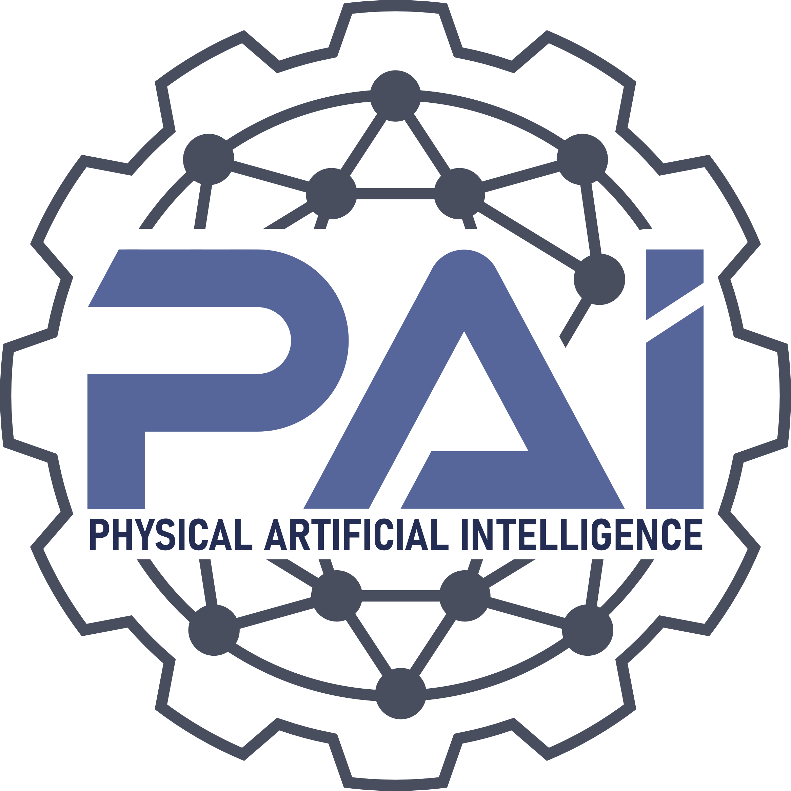
Abstract
World foundation models have emerged as powerful simulators of physical environments, yet they predominantly operate in a single-view setting and lack the multi-view 3D consistency required by robotic manipulation. Robotic systems rely on egocentric, eye-to-hand, and wrist-mounted cameras to capture complementary viewpoints for policy learning, but current multi-view world models often concatenate view tokens without explicit geometric reasoning, leading to cross-view object drift, depth inconsistency, and texture misalignment. PAIWorld addresses these failures through two coupled technical pillars: an inter-view communication pathway and a geometric learning signal. Geometry-Aware Cross-View Attention and Geometric Rotary Position Embedding establish geometry-aware feature exchange across views, while Latent 3D-REPA distills 3D-aware features from frozen foundation models to keep exchanged content 3D-consistent. Built on a DiT-based world foundation model, PAIWorld ranks 1st on the WorldArena leaderboard and 2nd on the AgiBot-Challenge2026 leaderboard, while supporting downstream applications including model-based planning, world action models, and multi-view policy post-training.
AgiBot-Challenge2026
Rank #2
82.45
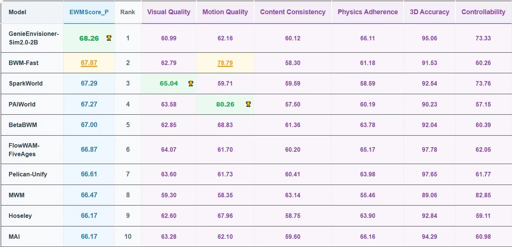
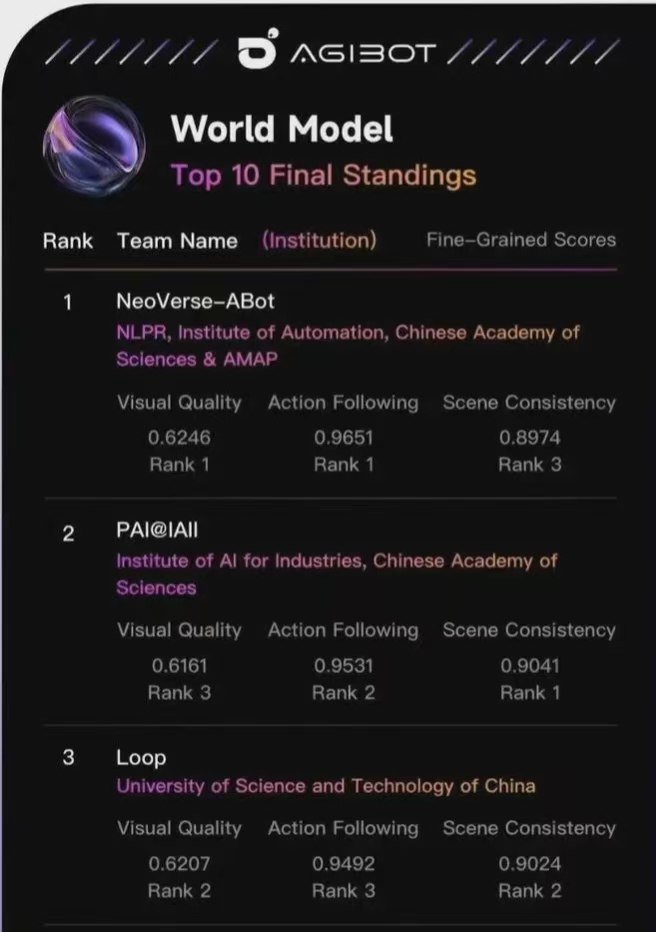
Overview
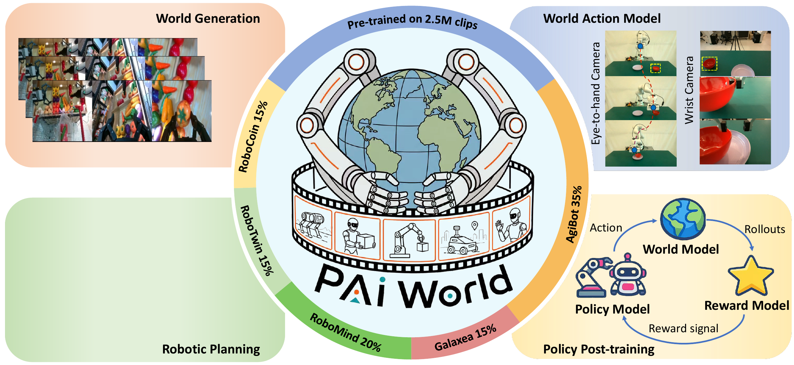
Method
PAIWorld injects 3D consistency into flow-matching world foundation models through two coupled pillars: an inter-view communication pathway and a geometric training objective.
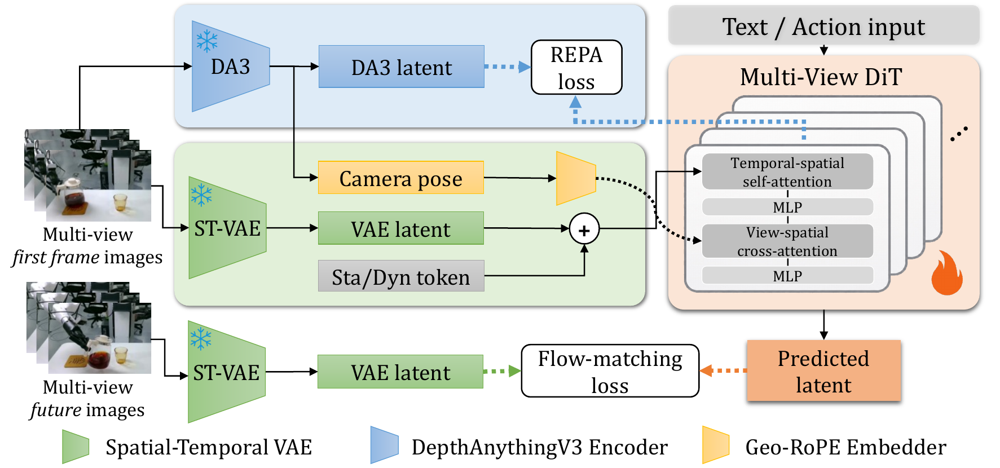
Two technical pillars realized by three lightweight components.
Geometry-Aware Cross-View Attention
Cross-view attention blocks open an explicit communication pathway across viewpoints, letting each view exchange features with the others during world-model generation.
Geometric Rotary Position Embedding
Geo-RoPE encodes camera ray directions and extrinsic poses into attention, biasing the inter-view pathway toward geometrically corresponding tokens.
Latent 3D-REPA
Intermediate DiT features are aligned with 3D-aware features from Depth Anything 3, supplying the geometric objective that makes exchanged content 3D-consistent.
Core claim
Communication and geometry must work together.
Cross-view attention alone provides a path for information flow but does not guarantee physically correct structure. A 3D prior alone improves each view independently but cannot propagate constraints across cameras. PAIWorld combines both conditions with Geo-RoPE as the shared reference frame.
Results
Stronger generation quality and cross-view consistency across world-model leaderboards and benchmarks.
WorldArena Leaderboard
PAIWorld ranks first by EWMScore_P on the WorldArena leaderboard.
| Method | EWMScore_P | Rank | Visual Quality | Motion Quality | Content Consistency | Physics Adherence | 3D Accuracy | Controllability | Action Following | Aesthetic Quality | Background Consistency | Depth Accuracy | Dynamic Degree | Flow Score | Image Quality | Instruction Following | Interaction Quality | JEPA Similarity | Motion Smoothness | Perspectivity | Photometric Consistency | Semantic Alignment | Subject Consistency | Trajectory Accuracy |
|---|---|---|---|---|---|---|---|---|---|---|---|---|---|---|---|---|---|---|---|---|---|---|---|---|
| PAIWorld | 70.67 | 1 | 63.58 | 80.26 | 57.50 | 60.19 | 90.23 | 57.15 | 49.21 | 40.17 | 89.17 | 86.86 | 67.90 | 75.98 | 52.32 | 85.00 | 77.06 | 96.67 | 95.11 | 96.30 | 3.33 | 88.98 | 81.44 | 45.33 |
| GenieEnvisioner-Sim2.0-2B | 68.26 | 2 | 60.99 | 62.16 | 60.12 | 66.11 | 95.06 | 73.33 | 48.23 | 39.07 | 90.80 | 96.49 | 51.34 | 52.07 | 46.73 | 82.70 | 73.60 | 97.16 | 83.08 | 93.64 | 7.05 | 89.05 | 82.50 | 58.63 |
| BWM-Fast | 67.87 | 3 | 62.79 | 78.79 | 58.30 | 61.18 | 91.53 | 60.26 | 3.61 | 39.94 | 90.27 | 86.76 | 69.14 | 73.14 | 50.62 | 88.02 | 78.02 | 97.81 | 94.10 | 96.30 | 3.08 | 89.15 | 81.54 | 44.35 |
| SparkWorld | 67.29 | 4 | 65.04 | 59.71 | 59.59 | 58.59 | 92.54 | 73.76 | 46.76 | 41.27 | 89.81 | 89.61 | 51.63 | 43.30 | 58.30 | 85.62 | 75.82 | 95.55 | 84.21 | 95.48 | 7.04 | 88.90 | 81.92 | 41.36 |
| BetaBWM | 67.00 | 5 | 62.85 | 68.83 | 61.36 | 63.78 | 92.04 | 60.39 | 3.62 | 40.16 | 90.78 | 87.41 | 58.21 | 59.99 | 51.00 | 88.48 | 78.24 | 97.39 | 88.29 | 96.68 | 10.55 | 89.08 | 82.75 | 49.31 |
| FlowWAM-FiveAges | 66.87 | 6 | 64.07 | 61.70 | 60.20 | 65.17 | 97.78 | 62.05 | 9.17 | 40.67 | 89.87 | 98.62 | 51.19 | 50.43 | 55.80 | 87.80 | 78.42 | 95.74 | 83.49 | 96.94 | 7.95 | 89.18 | 82.79 | 51.92 |
| Pelican-Unify | 66.61 | 7 | 63.60 | 61.73 | 60.41 | 63.98 | 97.65 | 61.77 | 10.10 | 40.29 | 89.85 | 98.38 | 51.99 | 51.49 | 53.28 | 85.64 | 77.14 | 97.24 | 81.70 | 96.92 | 7.06 | 89.57 | 84.31 | 50.82 |
| MWM | 66.47 | 8 | 59.30 | 58.35 | 63.14 | 55.46 | 89.06 | 82.85 | N/A | 37.35 | 88.51 | 84.35 | 55.23 | 34.66 | 55.36 | 76.88 | 71.54 | 85.18 | 85.15 | 93.76 | 17.37 | 88.82 | 83.55 | 39.39 |
| Hoseley | 66.17 | 9 | 62.60 | 67.96 | 58.75 | 63.90 | 92.84 | 59.11 | 4.25 | 40.49 | 89.90 | 90.75 | 56.47 | 58.16 | 49.99 | 83.72 | 75.40 | 97.33 | 89.25 | 94.94 | 4.11 | 89.35 | 82.23 | 52.41 |
| MAI | 66.17 | 10 | 63.28 | 62.10 | 59.60 | 66.16 | 94.29 | 60.98 | 3.47 | 40.20 | 88.74 | 90.26 | 53.48 | 48.97 | 60.24 | 90.66 | 79.16 | 89.40 | 83.86 | 98.32 | 7.98 | 88.81 | 82.07 | 53.16 |
AgiBot-Challenge2026
PAIWorld ranks second overall and achieves the best scene consistency among reported teams.
| Team | EWMScore | PSNR | Scene Consistency | nDTW |
|---|---|---|---|---|
| Direction | Higher | Higher | Higher | Higher |
| NeoVerse-ABot | 0.829 | 0.6246 | 0.8974 | 0.9651 |
| Loop | 0.8241 | 0.6207 | 0.9024 | 0.9492 |
| Wild Path | 0.8232 | - | - | - |
| VIPL-GENUN | 0.8195 | - | - | - |
| PAIWorld | 0.8245 | 0.6161 | 0.9041 | 0.9531 |
AgiBot-World Model
Text-conditioned multi-view generation results from the LaTeX manuscript.
| Method | SSIM | LPIPS | FID | FVD | Semantic | Geometric | MEt3R |
|---|---|---|---|---|---|---|---|
| Direction | Higher | Lower | Lower | Lower | Higher | Higher | Lower |
| Genie-Envisioner | 0.7445 | 0.3345 | 83.7847 | 207.2025 | 0.9231 | 0.5327 | 15.75 |
| Cosmos-Predict2 | 0.5870 | 0.3251 | 58.2837 | 188.6350 | 0.8456 | 0.4824 | 17.47 |
| Wan2.1 | 0.5715 | 0.3354 | 56.4735 | 174.2186 | 0.8617 | 0.4716 | 16.59 |
| PAIWorld | 0.7683 | 0.1844 | 45.0389 | 175.7778 | 0.9041 | 0.4056 | 14.20 |
Demos
WorldArena and AgiBot-Challenge generation examples.
WorldArena
Representative action-conditioned world model generation episodes.
World model generation
Reconstruction
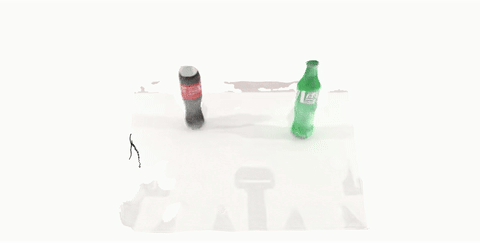
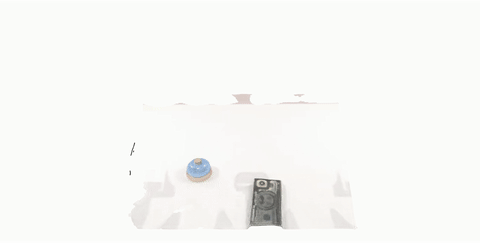
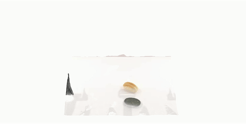
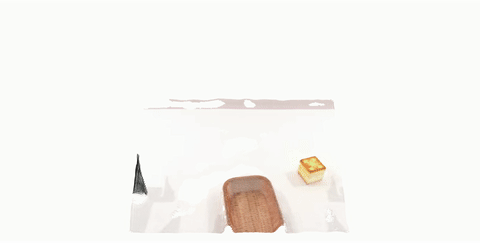
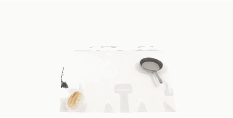
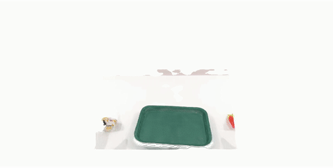
AgiBot-Challenge
World model generation, GT image/depth comparison, and multi-seed consistency examples.
World model generation


Multi-view generation
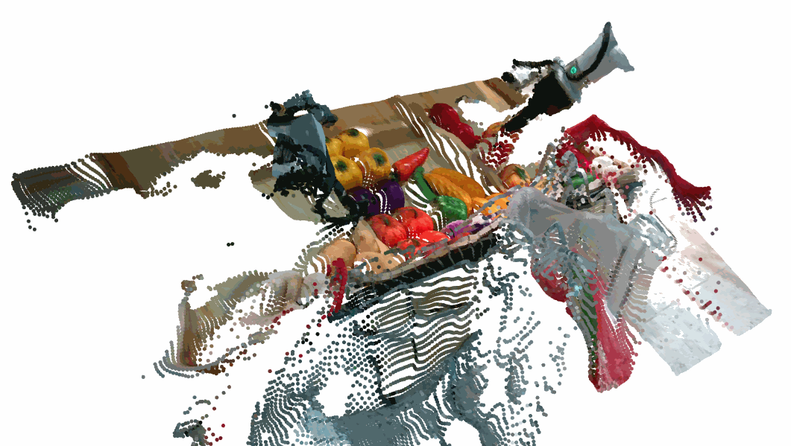
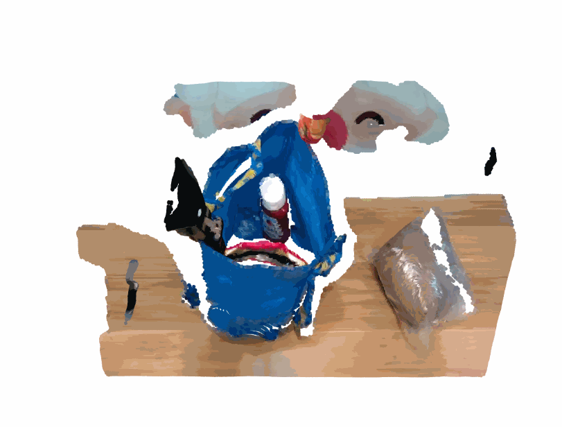
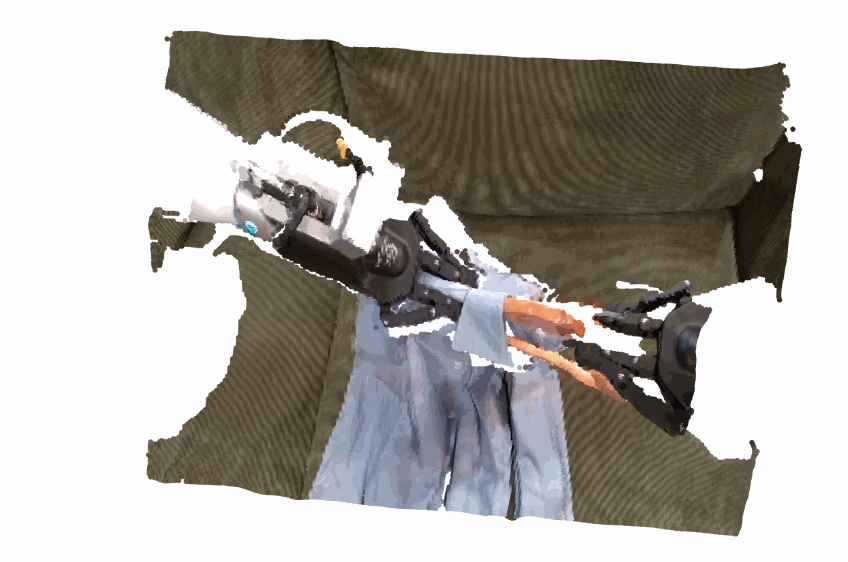
GT Image and Depth Comparison


Multi-Seed Generation Consistency


Contribution
Core Contributors
Yuhang Huang, Jiazhao Zhang, Xuan Lv, Junyan Xu, Zhiyuan Yu, Ruizhen Hu, Kai Xu
Contributors
Wancheng Feng, Shilong Zou, Hewen Xiao, Ziqiao Zhou, Kaiyun Huang, Zhiyu Peng, Juzhan Xu, Hang Zhao, Chenyang Zhu, Renjiao Yi, Yifei Huang, Douhui Wu, Yan Zhang, Kexu Cheng, Chunhe Song, Yunzhi Xue, Xiuhong Zhang, Leitao Guo, Yunji Chen, Bin Wu, Haibin Yu
Corresponding Author
Kai Xu
Citation
BibTeX
@article{paiworld2026,
title={PAIWorld: A 3D-Consistent World Foundation Model for Robotic Manipulation},
author={The PAIWorld Team},
journal={Manuscript},
year={2026}
}